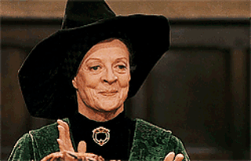
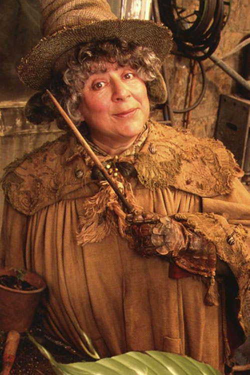

MOST LOVED PROFFESSORS

Head master: Professor Albus Percival Wulfric Brian Dumbledore
Dumbledore had silver hair and beard long enough to tuck into his belt; he was very tall and extremely thin, and had light, bright blue eyes. His nose was very long and crooked and he wore half-moon spectacles and high-heeled, buckled shoes .

Transfiguration professor and head of gryffindoor house: Proffessor Minerva McGonagall
McGonagall was a rather severe-looking woman with square glasses and black hair drawn tightly into a bun. Her colour of choice for robes was emerald-green . McGonagall was very strict and very clever.
Charms professor and head of ravenclaw house: Professor Filius Flitwick
Flitwick was an extremely short man due to his goblin ancestry; he had neatly parted, shining chestnut-brown hair and a rather bushy moustache. He wore small round glasses over his warm brown eyes, and had pallid, wrinkled skin.

Herbology professor and head of hufflepuff house: Pofessor Pomona Sprout
Sprout was slightly overweight, and was rather short. She had flyaway grey hair and a large amount of dirt beneath her finger-nails. Her eyes were wide and blue, and she had light skin

Potions professor and head of slytherin house: Proffesor Severus Snape
Snape had long, greasy black hair, a hooked nose and sallow skin. His black eyes were like cold, empty tunnels. He was small, sallow, stringy and skinny . Cruel, sarcastic and bitter, Snape frequently insulted his students and displayed blatant favouritism towards Slytherin, his own house.
Keeper of Keys and Grounds, Gamekeeper and Care of Magical Creatures professor:Professor Rubeus Hagrid
Rubeus Hagrid is a half-giant with shaggy hair and a “wild, tangled beard” who serves as the Keeper of Keys and Grounds, Gamekeeper, and Care of Magical Creatures professor at Hogwarts. He is excessively fond of “interesting creatures” — that anyone else would call fearsome monsters.